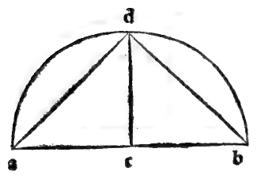

Chapter XXVIII: How the Third Regular Body, Called the Octocedron, Is Formed in the Sphere¶
How the Third Regular Body, Called the Octocedron of Eight Triangular Bases, Is Formed in the Sphere.

Next we show how to form the third regular body, called the octocedron, which is bounded by eight equilateral triangles meeting four by four at six solid angles along twelve equal edges ([XIII.14] [Campanus XIII.15]).
Construction of the Regular Octahedron in a Given Sphere ([XIII.14])
Given the diameter of a sphere, to find the side of the regular body of eight equilateral triangular bases (octocedron) inscribed in it, and to show that the square on the diameter of the sphere is double (\(2 : 1\)) the square on the side of the octocedron.
Construction and Proof ([XIII.14], [III.31], [I.47], [IV.6])
Let \(ab\) be the diameter of the given sphere (see the marginal diagram
0033.g2.pngon Folio 0033), and bisect \(ab\) at its midpoint \(c\) (\(ac = cb = \frac{1}{2}ab\)).Describe the semicircle \(adb\) upon diameter \(ab\), draw \(cd\) from the center \(c\) perpendicular to \(ab\) meeting the circumference at \(d\), and join the chord \(db\) (and \(da\)).
Because \(ac = cb = cd\) (all three being radii of the semicircle \(adb\)), in the right triangle \(dcb\) ([I.47]), \(db^{2} = dc^{2} + cb^{2} = 2\,cb^{2}\). Meanwhile \(ab = 2\,cb \implies ab^{2} = 4\,cb^{2}\). Therefore the square on the diameter of the sphere (\(ab^{2}\)) is double the square on \(db\):
\[ab^{2} = 2\,db^{2}\]Now construct in a plane a square \(efgh\) whose four sides \(ef, fg, gh, he\) each equal \(db\) (or equivalently, inscribe the square \(efgh\) in a circle of diameter \(ab\) by the sixth of the fourth), and draw its two diagonals \(eg\) and \(fh\) intersecting at center \(k\).
Because \(ef = db\) and \(ab^{2} = 2\,db^{2}\), each diagonal \(eg\) and \(fh\) of the square \(efgh\) equals \(ab\), and each half-diagonal \(ke, kf, kg, kh\) equals the radius \(cb = cd\) of the sphere.
Through the center \(k\) of the square \(efgh\), draw a straight line \(lm\) perpendicular to the plane of the square \(efgh\) on both sides ([XI.12]), making each half-axis \(kl\) and \(km\) equal to \(ke = kf = kg = kh = cb\) (the radius of the sphere).
Join the upper pole \(l\) and the lower pole \(m\) by eight straight lines \(le, lf, lg, lh\) and \(me, mf, mg, mh\) to the four corners of the central square \(efgh\).
Since \(kl\) and \(km\) are perpendicular to the plane \(efgh\), all eight triangles \(kle, klf, \dots, kmh\) are right-angled at \(k\) with legs equal to \(cb\); hence by [I.47] each of the eight slant edges equals \(db\), matching the four edges \(ef, fg, gh, he\) of the equatorial square.
Thus all twelve edges are equal to \(db\), all eight faces are equilateral triangles, and since the six distances \(ke, kf, kg, kh, kl, km\) from the center \(k\) are all equal to the radius \(cb\) of the sphere, the semicircle described on the axis \(lm\) passes through all six vertices \(l, m, e, f, g, h\) as it revolves.
Therefore the octocedron is formed and inscribed in the sphere, and the square on the diameter of the sphere is double (\(2 : 1\)) the square on the edge of the octocedron. In numbers, if the diameter of the sphere is \(6\) (whose square is \(36\)), the square on the edge of the octocedron is half of \(36\), namely \(18\), and its edge in length is \(\sqrt{18}\) (radice de 18).
Marginal Woodcut Diagrams (Paganini 1509)¶

Folio 0033 Diagram 3¶

Folio 0033 Diagram 4¶

Folio 0034 Diagram 1¶